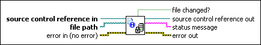

SCC File Properties VI
Owning Palette: Source Control VIs
Requires: Professional System
Displays a dialog box that contains the source control properties of a specified file, such as the file type and revision number. Some source control providers also return properties in the status message output.

 Add to the block diagram Add to the block diagram |
 Find on the palette Find on the palette |